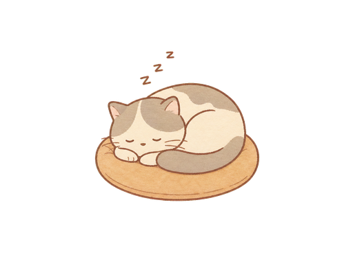

첫 연결·온보딩
처음 실행한 사용자가 PC Companion과 연결하는 진입 화면.
진입 · 미페어링 상태Agent Forest · screen definition v1 · image-first UI
통합기획안의 네 키캡 메뉴를 실제 사용 흐름에 맞춰 12개 화면·상태로 완성한 개발 정본입니다. 각 정의에는 진입·종료·데이터·행동·예외·반응형·사용 PNG와 실제 이미지형 목업이 함께 들어 있습니다.
01 · Screen inventory
네 개 키캡은 최상위 정보 구조이고, 실제 화면은 첫 실행·상세·확인·오류 상태까지 포함해야 완결됩니다. 아래 12개를 무료배포 버전의 필수 화면으로 정의합니다.
처음 실행한 사용자가 PC Companion과 연결하는 진입 화면.
진입 · 미페어링 상태고양이·욕구 이름표·재화·소리·키캡을 한 화면에 표시.
기본 · 항상 표시고정 4자리의 고양이·빈자리·욕구 경고를 목록으로 확인.
키캡 1 · 기본 탭이름·스타일·욕구·밥·간식과 연결 세션 이동을 처리.
S02 고양이 선택자리 1~4, 티어 진행, 장착 소품과 가격을 확인.
키캡 2 · 기본 화면아이템·비용·보유 조개·구매 후 결과를 확인.
S04 구매 버튼6자리 페어링과 세션 상태·새로고침·연결 해제를 관리.
키캡 3 · 연결 탭세션·부서·프롬프트를 선택하고 실제 Codex 작업을 시작.
키캡 3 · 지시 탭현재 작업 제목·상태·토큰·결과 미리보기·중단을 제공.
키캡 4 · 진행 탭최근 이벤트 40건, 상태 필터, 시간, 기록 지우기를 제공.
키캡 4 · 기록 탭Codex 승인·구매·삭제 등 중요한 결정을 캔버스에서 확인.
전역 모달데이터 없음, 브리지 끊김, 재시도 가능한 오류를 분리.
전 화면 공통 상태02 · Shared image UI system
CSS로 패널을 다시 그리지 않습니다. 프레임·탭·카드·버튼·배지의 표면은 PNG이고 코드는 위치, 데이터, 상태 전환과 접근성만 담당합니다.


PC Companion 페어링이 없을 때 월드 위에 처음 한 번 표시
 Agent Forest 시작
Agent Forest 시작
배경 월드를 가리고도 캔버스 경계 안에 유지되는 첫 실행 이미지 팝업
bridgeState !== "connected"이고 저장된 페어링 토큰 없음popup-frame-v1.pngpopup-title-ribbon-v1.pngbuttons-v1.png · primary/pressed/disabledbadges-v1.png · status-lamp/count-pill고양이 상태와 하단 4개 메뉴를 항상 확인하는 기본 화면

이름표에 이름·배고픔·배설·행복도가 고양이 이동 중 함께 따라다님
name/hunger/toilet/happinessconcept-beach-animals-v1.pngmenu-keycaps-meta-base-v1.png · 신규need-gauge-track/fill-*.png · 신규happiness-badge-v1.png · 신규4개 고정 자리의 고양이와 욕구 경고를 이미지 카드로 확인
고양이 관리
목록 카드 전체가 이미지이며 선택·경고·빈자리 상태가 색과 텍스트로 함께 구분됨
popup-frame-v1.pngcards-v1.png · list-card/selectedbadges-v1.png · count/status-lampbuttons-v1.png · secondaryicons-v1.png · warning/plus선택한 고양이의 이름·스타일·욕구와 돌봄 행동을 관리
보리 돌보기
체형 선택은 삭제하고 이름·스타일·욕구·돌봄만 유지
cards-v1.png · selected + thumbnailpanels-v1.png · progress-track/fillextras-v1.png · button-chipbuttons-v1.png · primary/secondaryicons-v1.png · paw/check/warning4개 고정 자리의 티어와 장착 아이템을 이미지 카탈로그로 관리
자리 꾸미기
두 번째 키캡은 체인 아이콘 대신 자리/책상 이미지 아이콘으로 교체
seat-1~seat-4 고정, 5번째 탭 없음tabs-v1.png · active/inactivecards-v1.png · thumbnail/list-cardpanels-v1.png · progressicons-v1.png · lock/checkbadges-v1.png · currency-pill조개 소비 전 아이템과 잔액을 한 번 더 확인하는 전역형 이미지 모달
구매 확인
이 아이템을 구매하고 자리 1에 장착할까요?
구매 확인도 페이지 바깥 모달이 아니라 캔버스 안에 표시
popup-frame-v1.pngpopup-title-ribbon-v1.pngcards-v1.png · selected/thumbnailbuttons-v1.png · primary/secondary/disabledbadges-v1.png · currency-pill페어링 코드와 최대 네 세션의 연결 상태를 관리
PC 연결·업무
연결과 업무 지시는 같은 키캡 안에서 두 이미지 탭으로 분리
tabs-v1.pngcards-v1.png · list/selectedbadges-v1.png · status-lampextras-v1.png · icon-squarebuttons-v1.png · danger선택 세션·부서·프롬프트를 조합해 실제 Codex 작업 시작
업무 지시
업무 시작 버튼은 이미지 기본·눌림·비활성 상태를 분리
tabs-v1.png · 연결/지시/부서cards-v1.png · selected sessionbuttons-v1.png · primary/pressed/disabledbadges-v1.png · status-lamp현재 실행 중인 Codex 작업과 토큰·결과 미리보기를 표시
진행 상태·기록
진행률은 실제 퍼센트가 있을 때만 사용하고, 없으면 단계 목록으로 표시
tabs-v1.pngcards-v1.png · selectedpanels-v1.png · progressbuttons-v1.png · dangerbadges-v1.png · status최근 이벤트 40건과 상태를 시간 순으로 확인
활동 기록
빈 기록일 때는 CSS 문구 대신 empty-state-v1 이미지를 표시
tabs-v1.pngcards-v1.png · list-card/dividericons-v1.png · bell/check/warningempty-state-v1.pngbuttons-v1.png · danger도구 승인과 중요 행동을 캔버스 안 이미지 모달로 처리
확인이 필요해요
닫기 버튼은 최소 48px 이미지 버튼이며 닫기는 승인으로 간주하지 않음
popup-frame-v1.pngpopup-title-ribbon-v1.pngbuttons-v1.png · primary/secondary/dangericons-v1.png · warning/closecards-v1.png데이터 없음과 복구 가능한 오류를 서로 다른 이미지 상태로 제공
상태 안내
작업이 시작되면 여기에 표시됩니다.
Companion 상태를 확인하세요.
잠시 후 다시 시도해주세요.

빈 상태는 실패처럼 보이지 않게, 오류는 원인과 복구 행동을 함께 표시
empty-state-v1.pngicons-v1.png · warning/refreshbuttons-v1.png · primary/secondarybadges-v1.png · status-lamp03 · Implementation matrix
화면 ID를 코드·상태·이미지 파일과 연결한 작업 기준입니다. 개발·테스트·캡처 파일명도 동일한 ID를 사용합니다.
| ID | 화면 | 주요 상태 | 핵심 데이터 | 주요 이미지 | 코드 위치 | QA 캡처 |
|---|---|---|---|---|---|---|
| S00 | 첫 연결 | 대기/확인/성공/실패 | pairingCode, bridgeState | frame, ribbon, primary | app/page.tsx | s00-onboarding.png |
| S01 | 월드 HUD | idle/working/queued/offline | agents, needs, audio | keycaps, needs gauge | app/agent-world-3d.tsx | s01-world.png |
| S02 | CAT 목록 | 작업/돌봄/완료/빈자리 | seats, agents, needs | cards, badges | app/page.tsx | s02-cat-list.png |
| S03 | CAT 상세 | 편집/저장/돌봄/경고 | name, style, needs | chips, progress, buttons | app/page.tsx | s03-cat-detail.png |
| S04 | DESK | 장착/보유/구매/잠김 | seatTier, inventory | tabs, item cards | app/page.tsx | s04-desk.png |
| S05 | 구매 확인 | 가능/부족/처리/성공 | shells, price, item | modal, primary/disabled | app/page.tsx | s05-purchase.png |
| S06 | PC 연결 | connecting/connected/offline | sessions, bridgeState | tabs, cards, lamp | app/page.tsx | s06-connect.png |
| S07 | 업무 지시 | 입력/검증/전송/오류 | session, department, prompt | tabs, primary button | app/page.tsx | s07-work.png |
| S08 | 진행 현황 | queued/working/approval/done | task, tokens, result | status card, danger | app/page.tsx | s08-status.png |
| S09 | 활동 기록 | 기록/빈 상태/삭제 | events[0..39] | list card, empty art | app/page.tsx | s09-log.png |
| S10 | 승인·확인 | 대기/확인/반려/처리 | approvalQueue | modal, 3 buttons | app/page.tsx | s10-approval.png |
| S11 | 공통 예외 | empty/offline/error/loading | errorCode, retry | empty art, warning | app/page.tsx | s11-states.png |